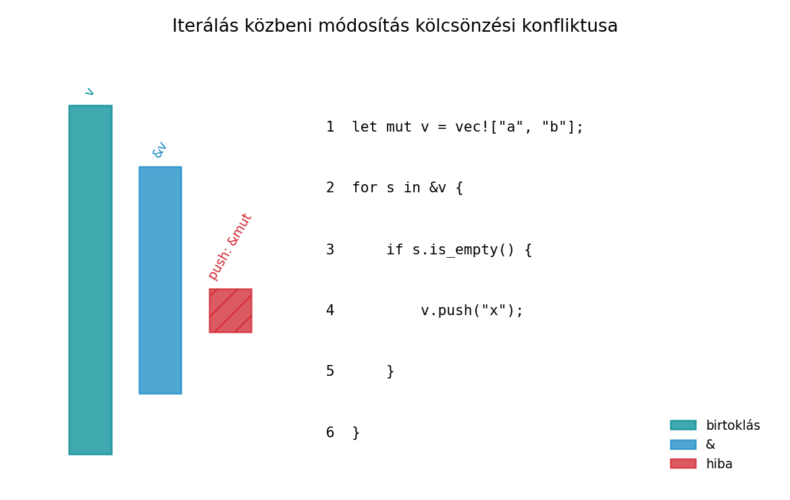

C++-ban a mutatók és referenciák aliasing-problémái gyakran csak
futás közben, nemdeterminisztikus hibaként jelentkeznek. Egy
std::vector elemének referenciáját megtartva a
push_back hívása reallokációt válthat ki, és a referencia
érvénytelenné válik; a program definiálatlan viselkedést (UB) mutat. A
Rust válasza erre a kölcsönzés-ellenőrző (borrow checker), amely már
fordítási időben elutasítja az ilyen mintát. A hibaüzenetek eleinte
frusztrálóak lehetnek, de ha megértjük, hogyan dönt a fordító, és
ismerjük a tipikus javítási mintákat, a hibák tanulságos iránytűvé
válnak.
Definíció. Non-lexical lifetime (NLL): a Rust 1.31 (2018-as edition) óta, az 1.36 óta pedig minden editionben a kölcsönzések élettartama nem a lexikális hatókör (blokk) végéig tart, hanem az adott referencia utolsó használatáig. A kölcsönzés-ellenőrző ezt az úgynevezett liveness-alapú elemzést használja, hogy pontosabban fogadjon el biztonságos kódokat.
Szabály (kölcsönzési szabály). Egy adott értékre
egyszerre vagy tetszőleges számú megosztott (&T)
referencia, vagy pontosan egy módosítható (&mut T)
referencia lehet. A konfliktust az NLL figyelembevételével ellenőrzi a
fordító: ha egy referencia már nem használt, nincs konfliktus.
Fontos különbség: kölcsönzési régió és drop-hatókör.
Az NLL a referencia (&T,
&mut T) kölcsönzési régióját az utolsó használatig
rövidíti. Az olyan érték, amelynek van destruktora (Drop),
például a RefCell::borrow() által visszaadott
Ref<T> őrző, a hatóköre végén dobódik el, és
az eldobás maga is használat: a kölcsönzési számláló csak ekkor csökken.
Ezért egy már nem olvasott, de még élő Ref mellett a
borrow_mut() futásidőben pánikol:
use std::cell::RefCell;
fn main() {
let c = RefCell::new(vec![1]);
let r = c.borrow(); // Ref guard: Drop-os érték
println!("hossz: {}", r.len()); // r utolsó olvasása
// c.borrow_mut().push(2); // pánik: RefCell already borrowed, r még él
println!("{}", c.try_borrow_mut().is_err()); // true
drop(r); // explicit eldobás: a guard itt szűnik meg
c.borrow_mut().push(2); // most rendben
// Sima referenciánál az NLL rövidít:
let mut v = vec![1, 2, 3];
let first = &v[0];
println!("{first}");
v.push(4); // rendben: first-et már nem használjuk
}Előre megjósolható szabály: sima referencia → az utolsó használatig
tart; Drop-os őrző → a hatókör végéig (vagy az explicit
drop-ig). A Cell és a RefCell
közti különbség ugyanebből adódik: a Cell megosztott
&Cell<T>-ből sosem ad közönséges, ellenőrizetlen
belső referenciát (a get másolatot ad, a set
cserél; a Cell::get_mut(&mut self) létezik, de ahhoz
kizárólagos hozzáférés kell), ezért nem kell őrző; a
RefCell igen, ezért kell a futásidejű számláló és az őrző
életciklusa.
Definíció. Kétfázisú kölcsönzés (two-phase
borrow): néhány, a fordító által implicit módon
létrehozott &mut kölcsönzés két fázisban él. Ilyen a
&mut self fogadójú metódushívás automatikus
fogadó-kölcsönzése (autoref, például v.push(...)), az
argumentumként átadott &mut implicit újrakölcsönzése és
az összetett értékadó operátorok (+= és társai) túlterhelt
változatának fogadója. A sorrend:
&mut
kölcsönzése létrejön, de csak foglalt (reserved) állapotban;
ilyenkor olvasásra még megosztható;v.len());Ezért fordul le a v.push(v.len()). Az explicit
&mut kifejezésre a szabály nem vonatkozik: a
Vec::push(&mut v, v.len()) E0502-vel
elutasul, mert a &mut v azonnal aktív kizárólagos
kölcsönzés, mire a v.len() kiértékelődik.
A fordítási hibák leggyakoribb hibakódjai:
E0499: cannot borrow x as mutable more
than once at a time (többszörös &mut)E0502: cannot borrow x as mutable because
it is also borrowed as immutable (& alatt
&mut)E0503: cannot use x because it was mutably
borrowed (az értéket használjuk, például kimásoljuk, miközben
egy élő &mut mutat rá)Az E0502 mindkét irányt lefedi: &
alatti &mut-ot és &mut alatti
&-t is („cannot borrow x as immutable
because it is also borrowed as mutable”). A hibakódok stabilak; a fenti
üzenetszövegek a Rust 1.99.1-éi.
C++-ban az aliasing hiba néma UB lehet:
#include <vector>
#include <string>
#include <iostream>
int main() {
std::vector<std::string> v = {"a", "b"};
const std::string& first = v[0];
v.push_back("c"); // reallokáció: first érvénytelen
std::cout << first << '\n'; // UB: dangling reference
}Rustban ugyanez a kísérlet fordítási hibát ad:
fn main() {
let mut v = vec!["a".to_string(), "b".to_string()];
let first = &v[0];
v.push("c".to_string()); // HIBA: first aktív
println!("{first}");
}A hiba lényege (E0502): a first megosztott kölcsönzése
aktív, mert a println!-ben használjuk, és a
v.push módosítható kölcsönzést igényel. A különbség: C++
UB-t ad, Rust fordítási hibát.
Tipikus hiba, amikor egy gyűjteményen iterálunk, és közben ugyanazt a gyűjteményt módosítani próbáljuk.
Ez a változat szándékosan nem fordul le:
fn main() {
let mut v = vec![String::from("a"), String::from("b")];
for s in &v {
if s.is_empty() {
v.push(String::from("x")); // HIBA: &v aktív
}
}
}A hiba lényege text blokkban:
error[E0502]: cannot borrow `v` as mutable because it is also borrowed as immutable
--> src/main.rs:5:13
|
4 | for s in &v {
| --
| |
| immutable borrow occurs here
| immutable borrow later used here
5 | v.push(String::from("x"));
| ^^^^^^^^^^^^^^^^^^^ mutable borrow occurs hereA for s in &v létrehoz egy megosztott kölcsönzést,
amely a ciklus teljes idejére aktív: a for a
&v-ből egy iterátort készít, és minden körben meghívja
ennek next() metódusát, ezért a kölcsönzés a ciklus végéig
él – akkor is, ha az s-t a ciklusmagban nem használjuk
(for _s in &v esetén is E0502 a hiba). A
v.push viszont módosítható kölcsönzést igényel ugyanarra a
v-re — ez ütközés.
A legegyszerűbb javítás a ciklus iterátorának lecserélése indexre, így a megosztott kölcsönzés csak az aktuális elem eléréséig tart:
fn main() {
let mut v = vec![String::from("a"), String::from("b")];
for i in 0..v.len() {
if v[i].is_empty() {
v.push(String::from("x"));
}
}
println!("{v:?}");
}Itt a v[i] megosztott kölcsönzése az if
feltétel kiértékelése után azonnal véget ér, így a v.push
már nem ütközik. Fontos azonban, hogy az indexeléses megoldás nem mindig
ideális: ha a ciklus közben törölünk vagy beszúrunk, az indexek
elcsúszhatnak. Ilyenkor érdemes külön gyűjteni a műveleteket, vagy más
mintát választani.
Ha csak egy rövid részben van szükség a kölcsönzésre, zárjuk blokkba, hogy a kölcsönzés véget érjen:
fn main() {
let mut v = vec![String::from("a"), String::from("b")];
{
let first = &v[0];
println!("{first}");
} // first kölcsönzése véget ér
v.push(String::from("x"));
}Az NLL ismeretében azonban a blokk nem mindig szükséges: ha a
first-et nem használjuk a push után, a fenti
kód explicit blokk nélkül is lefordul, mert a kölcsönzés az utolsó
használatnál véget ér.
fn main() {
let mut v = vec![String::from("a"), String::from("b")];
let first = &v[0];
println!("{first}");
v.push(String::from("x"));
}Ez az NLL közvetlen előnye: a régi lexikális szabály szerint ez a kód hibás lett volna.
A std::mem::take(&mut x) kiveszi az x
értékét (a tulajdonjogával együtt), és a helyére a típus
Default értékét teszi. Akkor van rá szükség, ha egy
&mut mögött álló értékből birtokolt értéket
kell készítenünk, mert a felhasznált API tulajdont kér, és nem akarunk
klónozni. Ha csak helyben kell módosítani, a
iter_mut/values_mut egyszerűbb (lásd a lenti
labort); a take nem a kölcsönzési hibák általános
feloldója.
Valós tulajdonosi igény: a String::from_utf8 a
Vec<u8>-t érték szerint veszi át. Az alábbi metódus a
Store (rkv-core/src/store.rs) nem UTF-8
értékeit veszteséges UTF-8-ra cseréli, másolás nélkül:
Kódblokk — fájl: rkv-core/src/store.rs ·
művelet: beillesztés az impl Store blokkba · ellenőrzés:
cargo build -p rkv-core
/// A nem érvényes UTF-8 értékeket U+FFFD cserekarakteres változatra cseréli.
/// Visszaadja a módosított értékek számát.
pub fn normalize_utf8(&mut self) -> usize {
let mut changed = 0;
for value in self.data.values_mut() {
// Tulajdon kell a from_utf8-hoz: kivesszük, a helyén üres Vec marad.
let bytes = std::mem::take(value);
*value = match String::from_utf8(bytes) {
Ok(text) => text.into_bytes(), // érvényes: változatlanul vissza
Err(e) => {
changed += 1;
// érvénytelen bemenetnél új, cserekarakteres puffer: nem másolatmentes
String::from_utf8_lossy(e.as_bytes()).into_owned().into_bytes()
}
};
}
if changed > 0 {
self.dirty = true;
}
changed
}Helyreállítási szabály. A take után a
mező átmenetileg a Default értéket tartalmazza; minden
kilépési úton vissza kell írni a valódi értéket. Itt mindkét
match-ág visszaír, és a kettő között nincs ?
vagy korai return. Ha mégis pánik következne be a két
átmenet között, az érintett érték üres Vec maradna (a
szokásos allokációs hiba nem pánik, hanem folyamatleállítás, tehát nem
az a tipikus indok; a pánikbiztonság problémája egy közbeeső, pánikoló
hívásra vonatkozik): a tároló érvényes, de adatot veszíthet, ezért ilyen
kódban a take és a visszaírás közé ne kerüljön hibázó
művelet.
Továbbvitt eredmény. Az itt összegyűjtött javítási mintákat az Élettartam-annotációk és az elision szabályai, a Vec, HashMap, BTreeMap és társaik; az Entry API és a Záróprojekt: az rkv teljes rendszerként alfejezetek használják fel.
Az alábbi katalógus a leggyakoribb borrow checker hibák feloldási
mintáit foglalja össze. Mindegyik minta tudatos döntést igényel, nem a
hibaüzenet „megkerülését” szolgálja. (A hatókör szűkítése a referenciák
kölcsönzési régióján túl az őrző értékek eldobási pontját is érinti:
RefCell-nél a blokkba zárás vagy az explicit
drop rövidíti a guard életét.)
Hatókör szűkítése. Ha a kölcsönzésre csak rövid ideig van szükség, blokkba zárjuk, vagy átrendezzük a kódot, hogy az utolsó használat hamarabb következzen be. Ez a legolcsóbb, nem változtat a típusokon.
Index használata. Iterátor helyett explicit indexciklust írunk. A kölcsönzés rövid, de a gyűjtemény módosítása esetén ügyelni kell az indexek érvényességére.
split_at_mut. Ha egy mutábilis szeleten vagy
tömbön két diszjunkt részre van szükségünk, a split_at_mut
két &mut szeletet ad, amelyek nem fedik egymást.
Példa:
let mut v = vec![1, 2, 3];
let (left, right) = v.split_at_mut(1);
left[0] += 10;
right[0] += 10;mem::take. Egy struct mezőjének
ideiglenes kicserélése alapértelmezett értékre. A mező tulajdonjoga
lokális változóba kerül, megszüntetve a self-re vonatkozó
kölcsönzést.
Klónozás tudatosan. Ha az adat kicsi, vagy a
másolat költsége elfogadható, clone-ot használunk. Ez nem a
borrow checker „legyőzése”, hanem explicit másolási döntés. Kerüljük a
reflexszerű clone-ozást, mert elrejti a tervezési
hibát.
Belső mutabilitás (Cell, RefCell). Futásidejű ellenőrzést végez, és lehetővé teszi a megosztott kölcsönzésen keresztüli módosítást. Csak akkor használjuk, ha a többi minta nem alkalmazható, mert a hiba futásidőbe kerül. Részletesen a Belső mutabilitás: Cell, RefCell és a futásidejű kölcsönzés alfejezet tárgyalja.
Az alábbi diagram az iterálás közbeni módosítás konfliktusát mutatja:
a &v megosztott kölcsönzés a ciklus teljes ideje alatt
aktív, ezért a v.push módosítható kölcsönzése hibát
okoz.

A diagram jól mutatja, hogy a v tulajdonos (owner)
élettartama a teljes blokk, a &v megosztott kölcsönzés
a for ciklus kezdetétől a ciklusmag végéig tart, a
v.push pedig ugyanabban a tartományban igényel módosítható
kölcsönzést — ez az átfedés okozza a hibát.
Munkakönyvtár: ~/rust-labor/rkv/
Ebben a laborban a tényleges rkv_core::Store-hoz
(rkv-core/src/store.rs, a Copy, Clone
és Drop: másolás és RAII Rustban ellenőrzési pontjának állapota)
adunk egy frissítő metódust, amely a megadott prefixszel kezdődő kulcsok
értékeihez egy bájtot fűz, és kívülről, integrációs teszttel
ellenőrizzük.
set metódusra bízza.Kódblokk — fájl: rkv-core/src/store.rs ·
művelet: beillesztés az impl Store blokkba ·
szándékosan hibás · várt hiba: E0502
pub fn append_to_prefix(&mut self, prefix: &str, byte: u8) -> usize {
let mut changed = 0;
for (key, value) in self.data.iter() {
if key.starts_with(prefix) {
let mut new_value = value.clone();
new_value.push(byte);
self.set(key.clone(), new_value); // E0502
changed += 1;
}
}
changed
}A fordító elutasítja:
cannot borrowselfas mutable because it is also borrowed as immutable.
A self.data.iter() megosztott kölcsönzést tart a
self.data-n a ciklus végéig, a self.set pedig
az egész* self-et kölcsönözné kizárólagosan. A C++-ban
ugyanez a minta (beszúrás egy std::unordered_map-be bejárás
közben) iterátor-invalidálást okozhat.
iter_mut), és a módosítás helyben történjen.
Klónozni sem kell.Kódblokk — fájl: rkv-core/src/store.rs ·
művelet: az 1. lépés metódusának cseréje · ellenőrzés:
cargo build -p rkv-core
/// A `prefix`-szel kezdődő kulcsok értékeihez hozzáfűzi a `byte`-ot.
/// Visszaadja a módosított értékek számát.
pub fn append_to_prefix(&mut self, prefix: &str, byte: u8) -> usize {
let mut changed = 0;
for (key, value) in self.data.iter_mut() {
if key.starts_with(prefix) {
value.push(byte);
changed += 1;
}
}
if changed > 0 {
self.dirty = true;
}
changed
}Az iter_mut a self.data-ra vesz fel
kizárólagos kölcsönzést, és minden elemhez
(&String, &mut Vec<u8>) párt ad; a kulcs nem
módosítható (ez a HashMap invariánsát védi), az érték igen.
A self.dirty = true a ciklus után áll, de a
ciklusban is lefordulna, mert a dirty és a
data különálló mezők, és a fordító a mezőnkénti
kölcsönzéseket külön követi; egy &mut self-et kérő
metódushívás (például self.set) viszont ott is ütközne.
Store-t importálja, saját másolatot nem tartalmaz.Kódblokk — fájl:
rkv-core/tests/update_prefix.rs · művelet: új fájl ·
ellenőrzés: cargo test -p rkv-core --test update_prefix → 1
sikeres teszt
use rkv_core::Store;
#[test]
fn append_to_prefix_changes_only_matching_keys() {
let mut store = Store::new();
store.set("alma".into(), vec![1]);
store.set("alfa".into(), vec![]);
store.set("korte".into(), vec![2]);
assert_eq!(store.append_to_prefix("al", 9), 2);
assert_eq!(store.get("alma"), Some(&vec![1, 9]));
assert_eq!(store.get("alfa"), Some(&vec![9]));
assert_eq!(store.get("korte"), Some(&vec![2]));
assert_eq!(store.append_to_prefix("nincs", 9), 0);
}cargo test -p rkv-core --test update_prefixVárt kimenet (rövidítve):
running 1 test
test append_to_prefix_changes_only_matching_keys ... okEllenőrzési pont. A Store új publikus
metódusai:
append_to_prefix(&mut self, &str, u8) -> usize
és normalize_utf8(&mut self) -> usize (mindkettő
beállítja a dirty jelzőt); a
cargo test --workspace az eddigi 7 unit tesztet és az új
integrációs tesztet sikeresen futtatja.
Kétszeri &mut ugyanarra az értékre.
Amikor egy változóra két módosítható referenciát próbálunk szerezni, a
fordító E0499 hibát ad. C++-ban ez gyakori (pl. két mutató ugyanarra az
objektumra), de Rustban tilos. A javítás: szűkítsük a kölcsönzések
hatókörét, vagy használjunk split_at_mut-ot, ha diszjunkt
részekről van szó.
Reflexszerű klónozás. A kezdő Rust-fejlesztők
gyakran clone-t hívnak minden borrow hibánál. Ez a kódot
lassítja és elrejti a tervezési problémát. Mindig kérdezzük meg: tényleg
szükség van a másolatra, vagy a kölcsönzés átrendezhető?
Rc<RefCell<T>>
túlhasználat. A belső mutabilitás csábító megoldás, de elkerüli
a fordítási idejű ellenőrzést, és futásidejű panikhez vezethet. Csak
akkor használjuk, ha a statikus minták valóban nem alkalmazhatók.
Öröklés-szimuláció Deref-fel. A Deref
trait automatikus konverziót tesz lehetővé, de nem öröklés. Ha egy típus
Deref-et implementál, az félrevezető lehet, és nem
helyettesíti a trait-eket.
Zár tartása .await-en át. Aszinkron
kódban a std::sync::MutexGuard (és az RwLock
guardjai) tartása .await-en keresztül a Send
határok megsértéséhez vezet, mert ezek a guardok nem
Send-ek; a tokio guardja Send, de hosszú zárat
és holtpont-kockázatot jelent. Ezt a Szálak, Send és
Sync: data race fordítási időben kizárva és a Future-ök és async/await: mi történik a motorháztető
alatt alfejezetek tárgyalják.
Az alábbi kód lefordul-e? Indokold az NLL szabályai alapján.
fn main() {
let mut x = 10;
let r = &mut x;
*r += 1;
println!("{x}");
}Az alábbi C++ kód egy vektorban megkeresi az első üres stringet, majd
hozzáfűz egy új elemet. A referencia érvénytelenné válhat a
push_back miatt. Írd át biztonságos, idiomatikus
Rustra.
#include <vector>
#include <string>
#include <iostream>
int main() {
std::vector<std::string> v = {"a", "", "b"};
const std::string* first_empty = nullptr;
for (const auto& s : v) {
if (s.empty()) {
first_empty = &s;
break;
}
}
if (first_empty) {
v.push_back("x"); // first_empty érvénytelen lehet
std::cout << *first_empty << '\n'; // UB
}
}Valósítsd meg az rkv-core Store típusához
(rkv-core/src/store.rs) a következő metódust a
mem::take minta használatával:
pub fn remove_keys_with_prefix(&mut self, prefix: &str) -> Vec<String> {
// Távolítsd el azokat a kulcsokat, amelyek a prefix-szel kezdődnek,
// és add vissza a törölt kulcsok listáját.
}A metódus nem használhat clone-t a kulcson; a törölt
kulcsokat birtokolt String-ként kell visszaadnia. Itt a
take valódi tulajdonosi igényt elégít ki: a kulcsokat a
térképből kivenni kell, nem kölcsönözni.
A következő kód fordítási hibát ad. Javítsd a
split_at_mut minta használatával.
fn main() {
let mut data = [1, 2, 3, 4];
let left = &mut data[..2];
let right = &mut data[2..];
left[0] += 10;
right[0] += 20;
}Mi a hiba pontos oka, és hogyan oldja fel a
split_at_mut?
Igen, lefordul. Az NLL szabály szerint a r módosítható
kölcsönzésének élettartama az utolsó használatáig tart, ami a
*r += 1; sor vége. A println!("{x}") már nem
használja a r-t, így a kölcsönzés megszűnt, és a
x megosztott kölcsönzése a println!-ben
megengedett. Régi lexikális szabály szerint ez a kód hibás lett volna,
mert a r a blokk végéig élt.
Idiomatikus Rust megoldás: először keressük meg az indexet, majd módosítsunk. Az indexelés elkerüli a hosszú kölcsönzést.
fn main() {
let mut v = vec!["a".to_string(), String::new(), "b".to_string()];
let first_empty = v.iter().position(|s| s.is_empty());
if let Some(i) = first_empty {
v.push("x".to_string());
println!("{}", v[i]); // itt már biztonságos, mert nincs aktív kölcsönzés
}
}A position megosztott kölcsönzést használ, de az
eredmény index, nem referencia, így a vektor módosítása után is
érvényes.
impl Store {
pub fn remove_keys_with_prefix(&mut self, prefix: &str) -> Vec<String> {
let data = std::mem::take(&mut self.data);
let mut removed = Vec::new();
for (key, value) in data {
if key.starts_with(prefix) {
removed.push(key); // a kulcs tulajdona kerül a listába
} else {
self.data.insert(key, value); // visszaírás
}
}
if !removed.is_empty() {
self.dirty = true;
}
removed
}
}A mem::take után a self.data üres, a régi
térkép a lokális data-ba kerül; ennek
into_iter-e birtokolt (String, Vec<u8>)
párokat ad, így a kulcsok klónozás nélkül kerülnek a
removed listába. A ciklusban a
self.data.insert nem ütközik semmivel, mert a lokális
data már nem a self része. Helyreállítási
szabály: minden meg nem tartott pár visszakerül, és a ciklusban nincs
hibázó művelet. (A Rust 1.88 óta a HashMap::extract_if
ugyanezt take nélkül is megoldja.)
A hiba: a data[..2] és data[2..] szeletek
kölcsönzése két külön &mut referencia a
data-ra, ami E0499 hibát ad, mert a fordító nem tudja
statikusan bizonyítani, hogy a két tartomány diszjunkt. A
split_at_mut explicit deklarálja a felosztást:
fn main() {
let mut data = [1, 2, 3, 4];
let (left, right) = data.split_at_mut(2);
left[0] += 10;
right[0] += 20;
}A split_at_mut garantálja, hogy a két visszaadott
&mut szelet nem fedi egymást, mert a felosztási pontot
a hívó adja meg.
A borrow checker NLL (non-lexical lifetimes) kiterjesztése óta a
kölcsönzések az utolsó használatig tartanak, nem a blokk végéig. Ez
pontosabbá teszi a hibadetektálást, és elfogad olyan biztonságos
kódokat, amelyeket a régi lexikális szabály elutasított. A tipikus hibák
(E0499, E0502, E0503) mögött általában aliasing-konfliktus áll; a
javítási minták katalógusa: hatókör szűkítése, index használata,
split_at_mut, mem::take, tudatos klónozás és
végső esetben belső mutabilitás. A laborban a valódi
rkv_core::Store kapott egy append_to_prefix
metódust: a self.data.iter() + self.set naiv
változat E0502-t ad, a helyes megoldás az
iter_mut; a mem::take mintát
(normalize_utf8, remove_keys_with_prefix) ott
használjuk, ahol tényleg birtokolt érték kell, és mindig visszaírjuk a
kivett értéket. Ezt a mintakatalógust az Élettartam-annotációk és az elision szabályai, a Vec, HashMap, BTreeMap és társaik; az Entry API és
a Záróprojekt: az rkv teljes rendszerként is
használja.
A Rust reference NLL-re vonatkozó fejezete és a The Rust Programming
Language (Könyv) 4.2 és 10.3 alfejezetei a kiindulópontok. A
hibaüzenetek pontos szövege verziófüggő; a hibakódok stabilak. A
std::mem::take és a split_at_mut API-ja a
stabil Rust része, de a pontos szignatúrák ellenőrizhetők a docs.rs-en.
Ez a szöveg nem támaszkodik webes keresésre, a nyelvi szabályok a szerző
stabil ismeretein alapulnak.